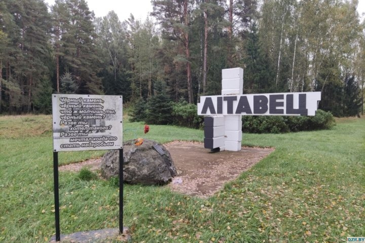
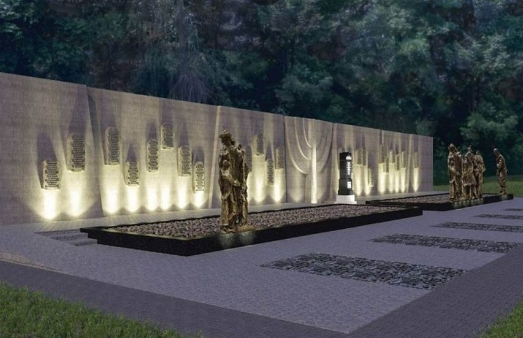
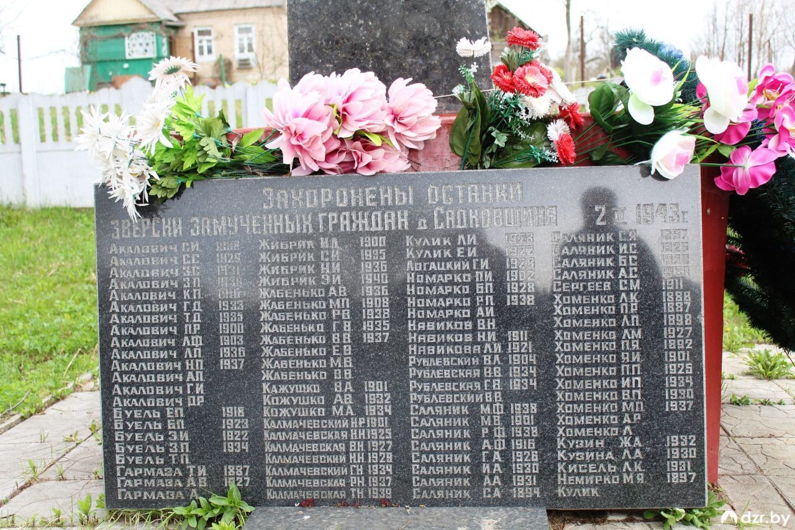

Дзержинск и Дзержинский район
Дзержинский район был полностью оккупирован немецкими войсками в конце июня 1941 года, и оккупация продлилась более трёх лет — до июля 1944 года. Для осуществления политики геноцида и проведения карательных операций сразу вслед за войсками в район прибыли карательные подразделения войск СС, айнзатцгруппы, зондеркоманды, тайная полевая полиция (ГФП), полиция безопасности и СД, жандармерия и гестапо. Во всех крупных деревнях района были созданы районные и волостные управы, полицейские гарнизоны из белорусских и польских коллаборационистов и назначены старосты.
В годы военного лихолетья здесь пострадало более 17 тысяч мирных граждан, преобладающе это были люди зрелого возраста, женщины и дети.
Местами массового уничтожения гражданского населения стали гетто в г. Дзержинске (около 2000 человек), урочище Рыжавка вблизи д. Виноградовка (около 15000 человек, привезенных из Европы), д. Литавец (196 человек), д. Скирмантово (192 человека), д. Глухое Перхурово (120 человек), д. Садковщина (96 человек) и другие деревни района. Деревни Глухое Перхурово, Литавец и Любожанка так и не были восстановлены в послевоенное время.
Выжженные земли Дзержинщины: Литовец, Любожанка, Садковщина, Скимантово, Глухое, Перхурово.
14 января 1943 года в ходе карательной операции «Якоб» против партизан Узденского и Дзержинского районов войсковые подразделения СС, включая и роту украинцев, принимавших участие в уничтожении Хатыни, окружили д. Литавец. Стариков, женщин и детей заперли в большом деревянном амбаре и подожгли. А мужчин отделили от общей группы и расстреляли возле горящего амбара.

Для убийства евреев на территории района привлекались также латышские и литовские коллаборационистские формирования, например, «29.5.42 г. передовая команда 24-го полицейского батальона численностью 1 офицер и 30 латышских полицейских под командованием майстера охранной полиции Штайна отправлена в Койданово». К 1 июля 1942 года на территории Белоруссии действовали латышские полицейские батальоны: 18-й, 24-й и 26-й, которые дислоцировались в Минске, Столбцах, а на территории Дзержинского района — в Станьково.
За лето 1941 года на территории района было образовано гетто, все узники которого были расстреляны 22 октября 1941 года. Установлены 5 мест массовых убийств евреев — Клыповщина, Рыжавка, Скородное, Дзержинск, Скирмонтово.
Для убийства евреев на территории района привлекались также латышские и литовские коллаборационистские формирования, например, «29.5.42 г. передовая команда 24-го полицейского батальона численностью 1 офицер и 30 латышских полицейских под командованием майстера охранной полиции Штайна отправлена в Койданово». К 1 июля 1942 года на территории Белоруссии действовали латышские полицейские батальоны: 18-й, 24-й и 26-й, которые дислоцировались в Минске, Столбцах, а на территории Дзержинского района — в Станьково.
Карта-схема уничтожения евреев на территории Дзержинского района с июня 1941 года по июль 1944 года
Рыжавка.
С осени 1941 года до 1943 года туда привозили туда эшелонами евреев из оккупированных земель Западной Европы (Германии, Чехословакии и Польши) — в большинстве старики. женщины и дети (их потом обобщенно стали называть «гамбургскими» евреями).
По архивным данным (НАРБ. ф. 510 оп. 1) в урочище Рыжавка с осени 1941 года по 1943 год немцы убили более 15 000 евреев.
Гетто в Дзержинске было уничтожено 21 октября 1941 года.

Садковщина. Деревня Садковщина была сожжена с 96 мирными гражданами по роковой ошибке вместо д. Саковичи ранним утром 2-го февраля 1943 года. Гитлеровцы окружили деревню. Одна из женщин, заметив их приближение, успела укрыть восьмерых детей (своих и соседских) в кустарнике за огородом. Они и остались в живых. Остальных жителей палачи согнали в большой сарай на окраине деревни и подожгли его. Когда огонь охватил постройку, молодой мужчина сумел проломать крышу и, выпрыгнув на снег, пытался бежать. Однако пули полицейских настигли его, а тело было брошено в огонь. Еще одного мужчину нашли в бочке, что находилась в сарае. Его также подвели к горящему сараю и живым бросили в огонь.
На территории Дзержинского района на железнодорожных станциях Негорелое, Койданово, Фаниполь были образованы отделения лагеря для советских военнопленных (Шталаг-352), который находился под Минском. Замученных голодом, холодом, болезнями пленных заставляли выполнять самые сложные работы. Их били, травивали собаками, расстреливали.
Лагерь военнопленных в Негорелом, расположенный в здании школы, был окружен колючей проволокой, по его периметру были поставлены наблюдательные вышки с пулеметами.
По свидетельствам жителей д. Гричино М.С. Лойко, А.А. Жигальского советские военнопленные удерживались в бывших скотоводческих помещениях колхоза «Октябрьская революция». Задерживались они здесь недолго, т.к. отправлялись в Германию, к тому же каждый день фашисты расстреливали по 25 – 30 человек. Их закапывали в силосной яме, размером 4 на 40 м. Яма была полностью заполнена трупами. Вблизи д. Гричино было расстреляно 1 500 человек.
Немецко-фашистскими захватчиками за годы войны по Дзержинскому району были полностью уничтожены 15 населенных пунктов (553 жителя, 333 двора). 78 частично (413 жителей, 327 дворов). На принудительные работы в Германию были вывезены 1115 человек, вернулись – 972.
Всего на Дзержинщине погибло 2180 человек, из них 1 200 женщин, 450 детей. Местные евреи были практически полностью истреблены.